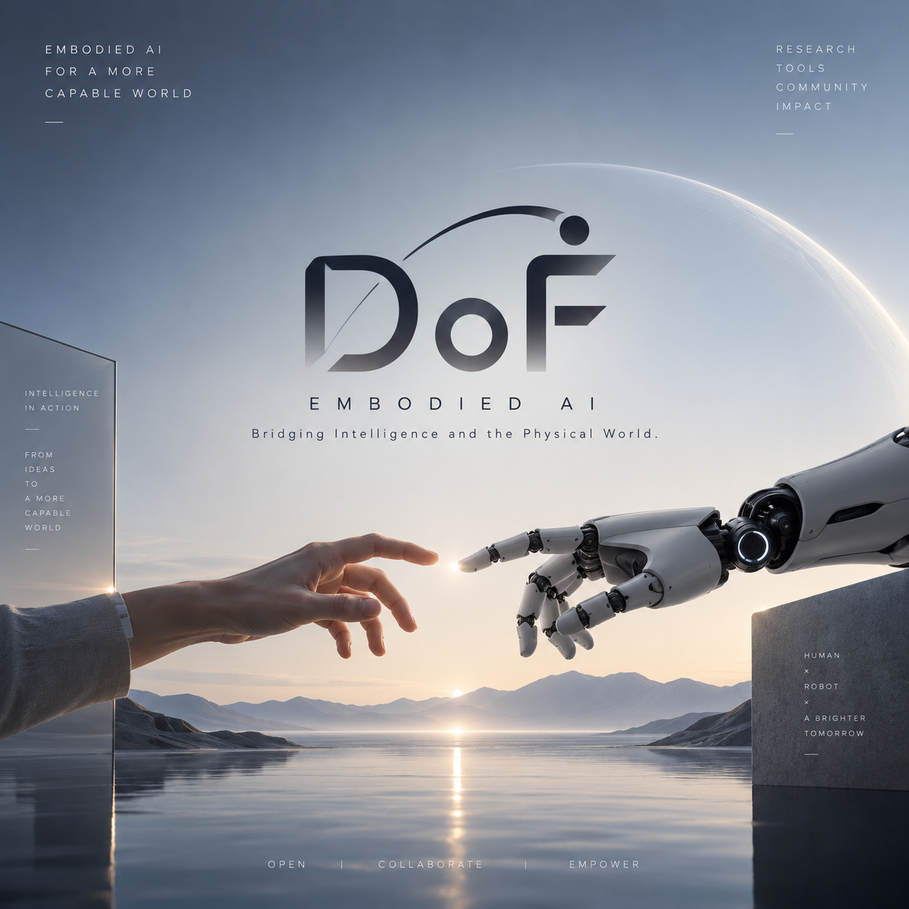

THE DOF KNOWLEDGE COLLECTION
Embodied AI.
Understood.
From world models and VLA to dexterous manipulation.
Original figures, real demonstrations, and step-by-step explanations.
- —
- Explainers
- —
- Videos
- —
- Total runtime

INTELLIGENCE IN ACTIONOPEN · COLLABORATE · EMPOWER
Pick up where you left off
PAPER BREAKDOWN / INFRA
Two ways into embodied AI.
FEATURED PAPERS
Read the paper. Understand the method.
A WAY THROUGH
Start with a question.
THE COLLECTION
Every explainer, in one place.
↗
Try a different keyword.
Search for point clouds, touch, VLA, or a paper title.
KEEP EXPLORING
Build intuition.
Return to the research.
Videos build intuition. Original papers supply the evidence.
Use the DoF research map to find, compare, and follow methods.